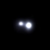

Home
Binary/Multiple Star System Gallery
It's estimated that 80% of the stars in the Milky Way exist in binary or multiple stellar systems.
That is, 80% or more stars have a stellar companion gravitationally bound in an orbit or through a common proper motion (explained below).
Below is an selected image gallery of star systems I've captured starting around late-2022. The system name, spectral types, apparent magnitudes, distance in light years, angular separation in arcseconds, physical separation in AU
Information Index
Stellar Components: Each star in a binary/multiple system is referred to as a component, with the brightest component laballed as "A", going down the alphabet as brightness decreases. Ex) Mizar A and Mizar B
Angular Separation: The angle between the lines of sight to two stars, usually measured in arcseconds (1/3600th of a degree).
Physical Separation: The actual distance between two stars in a binary/multiple system, usually measured in astronomical units (AU, Earth-Sun Distance).
Apparent Magnitude: Measure of a star's brightness seen from Earth, with smaller numbers indicating a brighter star. A difference of one in apparent magnitude roughly equals a 2.512x increase in brightness.
Other Information: Spectral types are also listed below (ex. K7V). Position angles will not be listed due to my setup being unable to measure them precisely.
Many of these star systems have closer components not visible through optical telescopes. Due to this, only information on the visible components is presented.
Types of Star Systems
How is the physical separation calculated?
From the small angle formula,
knowing distance and angular separation, we obtain:
For the formula above, we are assuming the distance between the stars is negligible.
However, for other cases, we must use the law of cosines to determine a physical distance:
Binary Stars | 5 Inch Celestron Reflector
36 Ophiuchi AB
7/21/2025
Type: Physical
AngSep: 5.1"
PhySep: ~30.3 AU
Mag: 5.1, 5.1
Dist: ~19.4 ly
SpecType: K2V, K1V
Eta Cassiopeiae
7/21/2025
Type: Physical
AngSep: 13.4"
PhySep: ~79.5 AU
Mag: 3.5, 7.4
Dist: ~19.4 ly
SpecType: G1V, K7V
95 Hercules
6/24/2025
Type: Physical
AngSep: 6.4"
PhySep: ~845 AU
Mag: 4.9, 5.2
Dist: ~432 ly
SpecType: A2IV, G5III
Gamma Virginis (Porrima)
6/12/2025
Type: Physical
AngSep: 3.5"
PhySep: ~40.8 AU
Mag: 3.5, 3.5
Dist: ~38.1 ly
SpecType: F0V, F0V
Iota Cancri
5/13/2025
Type: CPM
AngSep: 30.6"
PhySep: ~40.8 AU
Mag: 4.1, 6.0
Dist: ~337 ly(?)
SpecType: G8III, A2V
Gamma Delphini
9/15/2024
Type: Physical
AngSep: 8.8"
PhySep: ~306.8 AU
Mag: 4.3, 5.0
Dist: ~114 ly
SpecType: F7V, K1IV

Gamma Andromedae (Almach)
9/1/2024
Type: Physical
AngSep: 9.5"
PhySep: ~1141.7 AU
Mag: 2.3, 5.0
Dist: ~393 ly
SpecType: K2IIb, B8V

Gamma Leonis (Algieba)
1/5/2024
Type: Physical
AngSep: 4.7"
PhySep: ~186.8 AU
Mag: 2.4, 3.6
Dist: ~130 ly
SpecType: K0III, G7III
Alpha Geminorum (Castor)
11/12/2023
Type: Physical
AngSep: 5.6"
PhySep: ~85.6 AU
Mag: 1.9, 3.0
Dist: ~50 ly
SpecType: A0V, A4V
Beta Scorpii
8/12/2023
Type: CPM
AngSep: 13.4"
PhySep: ~1643.1 AU
Mag: 2.6, 4.5
Dist: ~400 ly
SpecType: B1V, B2V
31 Draconis
7/11/2023
Type: Physical
AngSep: 29.6"
PhySep: ~??? AU
Mag: 4.6, 5.6
Dist: ~74-75 ly
SpecType: F5IV, F8V
Mizar
7/4/2023
Type: Physical
AngSep: 14.4"
PhySep: ~377.9 AU
Mag: 2.2, 3.9
Dist: ~85 ly
SpecType: A2V, A7V

Cor Caroli
6/19/2023
Type: Physical(?)
AngSep: 19.3"
PhySep: ~607.9 AU
Mag: 2.9, 5.5
Dist: ~103 ly
SpecType: A0V, F2V
16 Cygni
3/26/2023
Type: CPM
AngSep: 39.7"
PhySep: ~835.2 AU
Mag: 6.0, 6.2
Dist: ~68.8 ly
SpecType: G1.5V, G2.5V
61 Cygni
11/25/2022
Type: Physical
AngSep: 32.0"
PhySep: ~111.6 AU
Mag: 5.2, 6.0
Dist: ~11.4 ly
SpecType: K5V, K7V
Sirius
10/22/2023
Type: Physical
AngSep: 11.3"
PhySep: 29.7 AU
Mag: -1.47, 8.4
Dist: ~8.6 ly
SpecType: A1V, DA2 (White Dwarf)
Beta Cygni (Albireo)
9/9/2022
Type: Optical
AngSep: 34.6"
PhySep: ~??? AU
Mag: 3.2, 4.7
Dist: ~330-434 ly
SpecType: K3II, B8III
Multi-Star Systems
36 Ophiuchi AB-C | 7/21/2025
Type: Physical
AngSep; AB: 5.1", AB-C: 732.5"
PhySep; AB: 30.3 AU, AB-C: ~4319 AU
Mag: 5.1, 5.1, 6.5
Dist: ~19.4 ly
SpecType: K2V, K1V, K5V
Rho Ophiuchi | 6/11/2024
Type: CPM
AngSep; AB: 151.1", AB-C: 156.5"
Mag: 5.1, 6.8, 7.2
Dist: ~451 ly
SpecType: All B Stars
Castor AB-C | 11/12/2023
Type: Physical
AngSep; AB: 5.6", AB-C: 71.6"
PhySep; AB: ~85.6 AU, AB-C: ~1096.9 AU
Mag: 1.9, 3.0, 9.8
Dist: ~50.1 ly
SpecType: A0V, A4V, M1V
Mizar-Alcor | 7/4/2023
Type: Physical
AngSep; AB: 14.4", AB-C: 715.5"
PhySep; AB: ~377.9 AU, AB-C: ~18,000+ AU
Mag: 2.2, 3.9, 4.0
Dist: ~85.0 ly
SpecType: A2V, A7V, A5V
Epsilon Lyrae (e1 and e2) | 3/26/2023
Type: Physical
AngSep; e1: 2.3", e2: 2.4", e1-e2: 209.4"
PhySep; e1: ~116 AU, e2: ~121 AU, e1-e2: ~10,000+ AU
Mag: 5.2, 6.1, 5.3, 5.4
Dist: ~162 ly
SpecType: A3V, F0V, A6V, A7V
Star Systems | Summer Science Program - Astrophysics 2024 at CU Boulder | 20 inch Planewave Reflector
GIC 176 AC | 7/24/2024
Type: Physical
AngSep: 54.8"
Mag: 5.3, 13.8
Groombridge 34 | 7/24/2024
Type: Physical
AngSep: 34.1"
Mag: 8.3, 11.4
36 Ophiuchi AB | 7/22/2024
Type: Physical
AngSep: 5.1"
Mag: 5.1, 5.1
LDS 678 | 7/22/2024
Type; AB: Physical, BC: Optical
AngSep:; AB: 27.3", BC: 3.8"
Mag: 12.3, 11.7, 12.3
"A" component is a White Dwarf
SDK 1 | 7/22/2024
Type: Physical
AngSep: 5.6"
PhySep: ~223 AU
Mag: 14.4, 14.4
White Dwarf Binary
Rho Ophiuchi | 7/22/2024
Type: Physical
Epsilon Lyrae | 7/14/2024
Beta Serpentis
7/14/2024
Type: Physical
AngSep: 29.9"
PhySep: ~1417.2 AU
Mag: 3.7, 9.9
Dist: ~155 ly
SpecType: A2V, K3V

Beta Cygni (Albireo)
7/9/2024
Delta Herculis
7/7/2024
Type: Optical(?)
AngSep: 13.8"
Mag: 3.1, 8.3
Delta Serpentis
7/3/2024
Type: Physical
AngSep: 4.0"
PhySep: ~281.3 AU
Mag: 4.0, 4.2
Dist: ~230 ly
SpecType: A9IV, F0IV